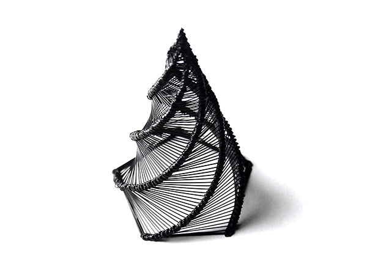

final project proposal!
concept
I've been playing around a bit with 3D printing structures that might be a bit difficult or a pain to print with a Rhino to Cura workflow. For example, single line width spirals like this:
This meant a lot of fiddling with flow rates and speeds; for the above I generated GCode from a grasshopper python script, omitting Cura entirely. This was an annoyingly laborious process. I think it would be fun to be able to play around with direct gcode manipulation to better explore these sorts of prints. I'm taking LIA's 2014 filament sculptures as inspiration here, too.

To play around with this, for my final project I propose generating GCode from p5.js to make a set of 3 generative vases . For the three vases, my goal is to have:
- one be something that would also be easy to recreate in Rhino (e.g. a box)
- the other two be less easy to accomplish via Rhino/Cura (e.g. single line extrusions, something more like Cura's wireprint mode)
timeline
My timeline is as follows; documentation is ongoing throughout this schedule:| day | plan |
|---|---|
| 5/19 | proposal |
| 5/20 | work on comms |
| 5/21 | work on comms |
| 5/22 | |
| 5/23 | |
| 5/24 | finalize printer-p5 communication |
| 5/25 | print vase 1 |
| 5/26 | vase 2/3 design |
| 5/27 | vase 2/3 design |
| 5/28 | print vase 2 |
| 5/29 | |
| 5/30 | |
| 5/31 | vase 3 design |
| 6/1 | print vase 3 |
| 6/2 | presentation |
contingency plans
- the most hazy element right now is sending gcode directly from p5 to the printer. if i drop this element and instead generate gcode that i print from an sd card, things should be totally doable
- as of now, i'm hoping to print more than 3 vases; but if need be, I can design and print fewer (i.e 2).